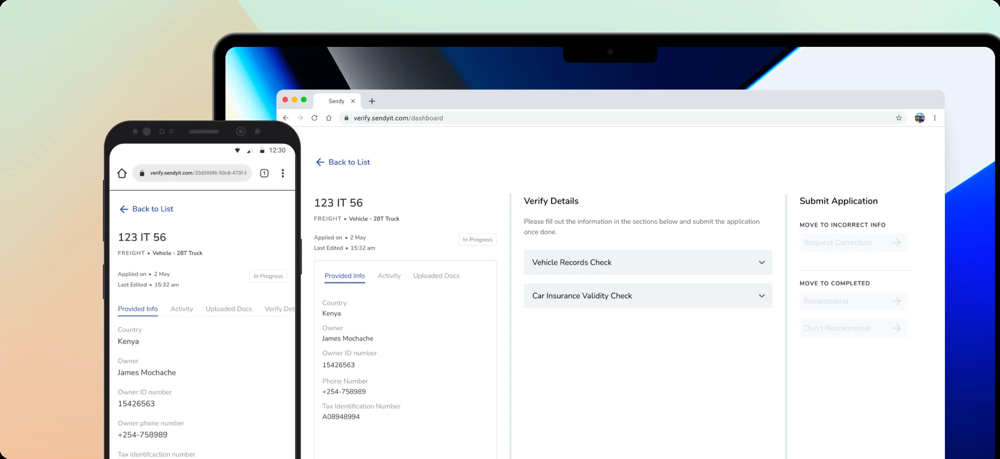
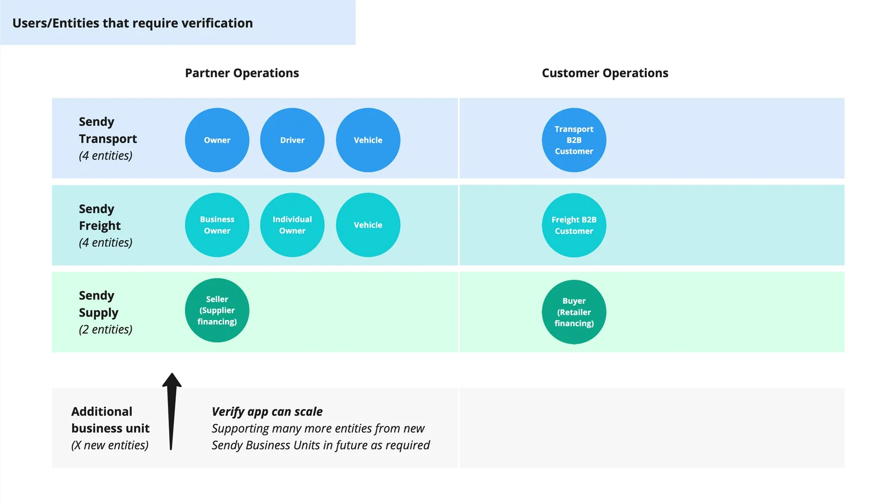
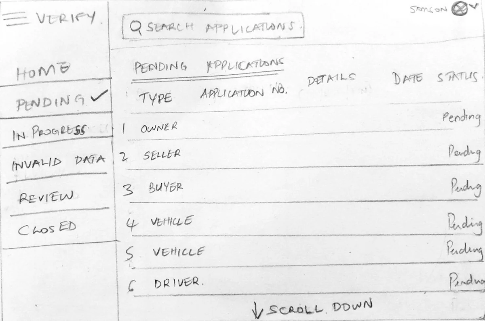
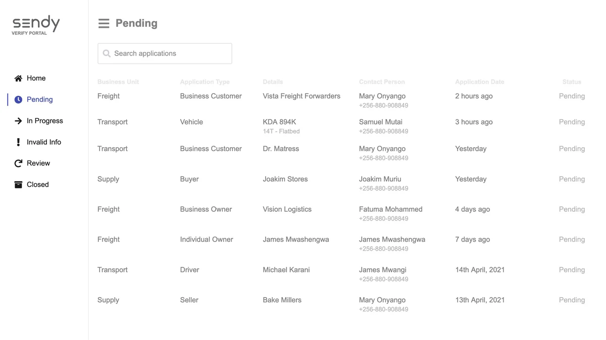
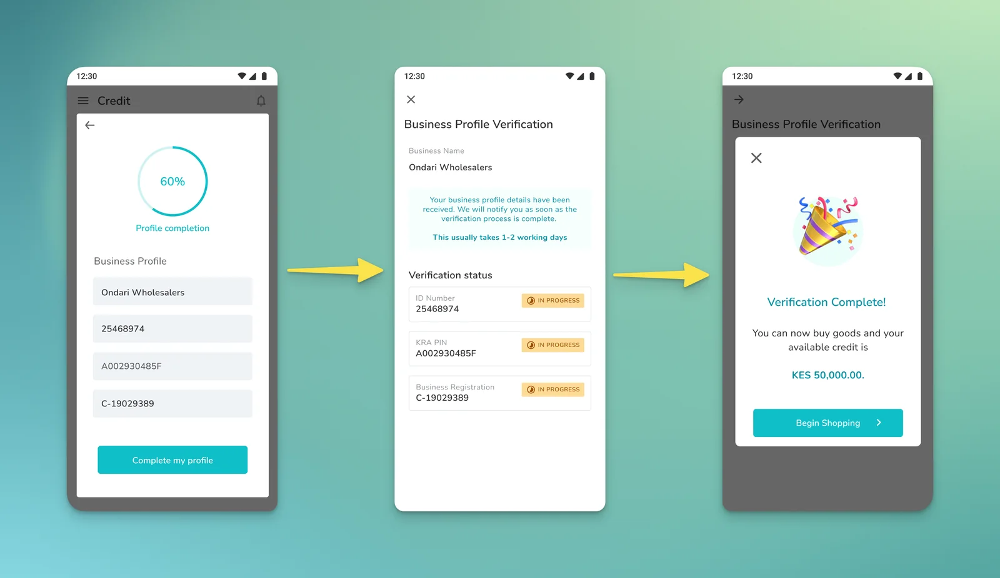
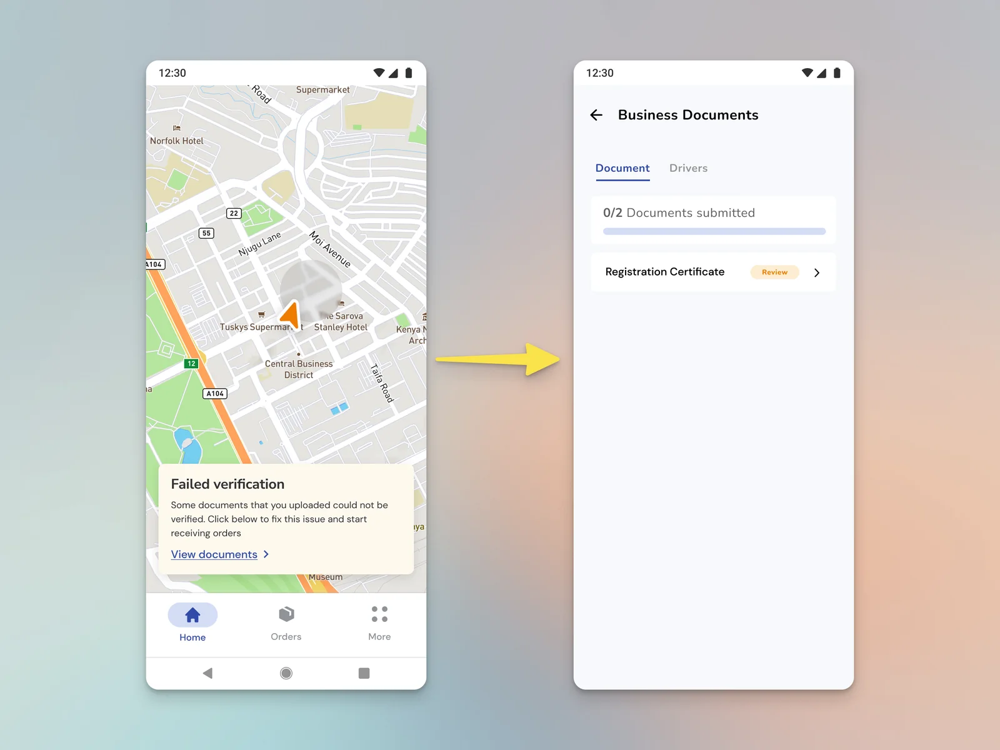
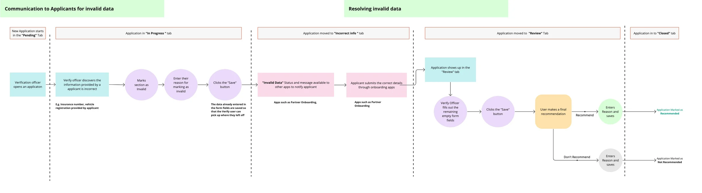

Four countries, multiple products, zero shared onboarding infrastructure. We built one.
24hrs
KYC verification time, down from 1 week
20%
reduction in support calls (~600 fewer calls/month)
3,000+
applications processed in the first quarter
Team: 1 Designer, 1 Product Manager, 4 EngineersMy role: Led all design work: research, strategy, UX and UI

The situation
Sendy started as a single product, motorcycle delivery, onboarding one type of partner. By 2021, the platform had grown to include Sendy Supply (B2B marketplace), Sendy Freight, and Sendy Credit, each onboarding different types of partners and customers with different KYC requirements. And Sendy was operating across four countries: Kenya, Uganda, Nigeria, and Côte d'Ivoire.
Each product team had built its own verification process. There was no shared system.

Ten entity types across three business units, each verified through a separate process.
What was breaking
The fragmentation created three escalating problems.
Operations teams were drowning. Staff jumped between multiple admin tools to manage incoming applications. Onboarding new partner types such as lending customers, 3PL fleet owners and freight companies took two to four weeks.
There was no source of truth. Team members stored application documents in personal Google Drives because there was no centralized system or clear process for document management.
Business risk was accumulating. Insurance claims for damaged or lost goods couldn't be finalized because supporting documents couldn't be found. This was a direct financial liability that grew as the platform scaled.
Research
I ran group interviews with operations teams rather than one-to-ones, because I needed the team's collective knowledge of process bottlenecks, not individual perspectives that might carry bias toward specific pain points. I supplemented this with a review of process documents, onboarding reports, and actual application submissions to fill gaps the interviews didn't cover.
What I prioritized
After presenting findings to my squad, we scoped the first version around four questions: How do teams see all applications and their verification stages? How do we notify applicants of progress and request corrections? How do we handle documents that expire and need periodic re-upload? And how do we control access based on who's logged in?
These weren't the only problems. But they were the ones that, if solved, would unlock the most operational capacity.


From first sketch to wireframe: one queue for every business unit, grouped by verification stage.
Key decisions
Build a platform, not a tool. The whole point was to stop every product team from building their own verification system. The architecture had to be integration-first, so any Sendy product could connect to it and have their users verified through the same workflow.
Status communication via webhooks. Partners and customers submitting applications through various Sendy apps needed real-time visibility into their application status. Rather than building notification UI into the verification tool itself, we pushed status updates via webhooks to all customer-facing Sendy apps. I coordinated with designers across product squads to align on how these status messages would appear in each app.

A customer submits business details once in the Credit app. The webhook returns each check's status and unlocks credit when verification completes.
Make corrections self-service. Instead of routing every document error through support, we built a correction request flow. The verification team flags the issue, the applicant gets a notification with a link to an online form, and the process continues without a phone call.

A failed check appears in the partner's own app and takes them straight to the document to fix.

How a correction moves between the verification officer and the applicant. Scroll sideways to follow it.
Outcome
24hrs
verification time (from 1 week)
20%
reduction in support calls (~600/month)
3,000+
applications in first quarter
KYC verification for financing customers dropped from one week to 24 hours. Support calls related to KYC corrections and document updates fell by roughly 20% , about 600 fewer calls per month. The system processed over 3,000 applications in its first quarter.
Sendy also had a single source of truth for verification data across all business units. And any new product Sendy launched could integrate with the platform from day one, using the same workflow, instead of each team building its own onboarding.